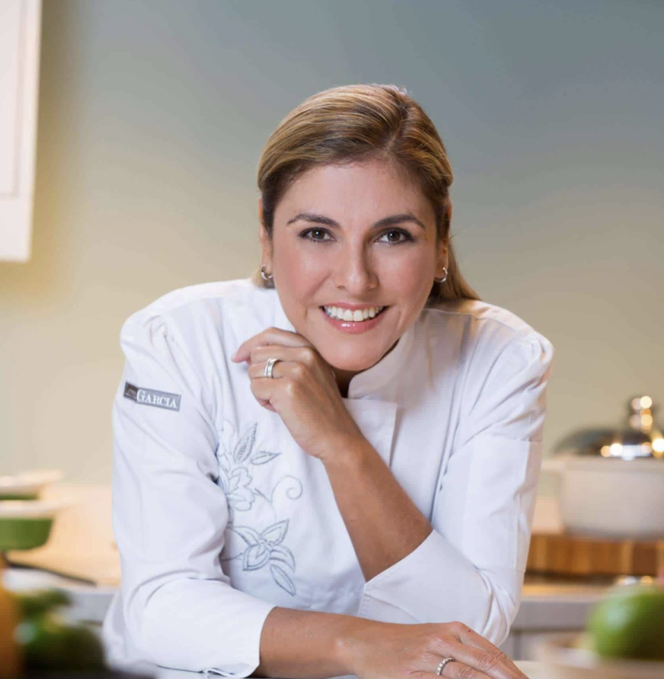
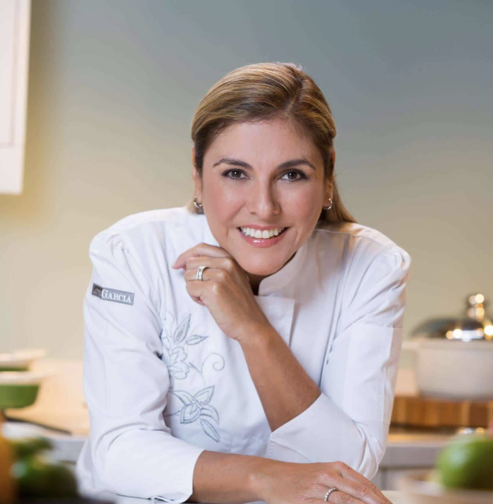

Meet the Team
At Amorantha, we take pride in the hard work our chefs and farmers put into each and every meal. They work together to create each dish with love and consideration for the environment. Our staff makes sure that every plate is a tribute to sustainability and quality by cultivating and harvesting fresh, organic foods every day on our on-site farm.

Chef Lorena Martinez

Chef Hemant Kaur

Chef Lucia Mehra
Farmer Robert Glinsky

Manager Rajiv Kapoor

Nutritionist Maya Patel
Click on a team member to learn more about them.

Chef Lorena Martinez
Chef Hemant Kaur
Chef Lucia Mehra
Farmer Robert Glinsky
Manager Rajiv Kapoor